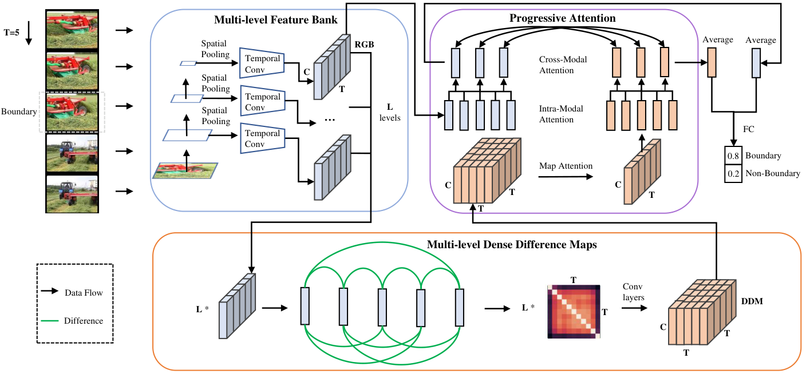

可直接借用它的两阶段证据核验结构与后处理规则，用于判断某个视觉变化是否值得写入历史；代价是原设定需要未来约 1 秒的帧，改成因果版本后每个边界都要晚一个窗口才能确认。
- 最小可复用件
- Map-Squeezed + intra-modal + cross-modal 的“先各自聚合、再互证”模块，以及“阈值 0.5 + ±5 帧局部极大值”的后处理。
- 主要风险
- 中心窗口带来的非因果性：非因果时精度高，因果化后会引入一个窗口的确认延迟，且延迟随采样跨度线性增长。
- 复现门槛
- Kinetics-GEBD 级别数据与 ResNet-50 单卡即可训练；无需额外标注，但需要视频级逐帧边界标签与较长的离线推理预算。
1. 核心摘要
Generic Event Boundary Detection（GEBD）要求不预设类别地找出人自然感到“事件切换”的时刻。难点不是动作分类，而是边界形态极杂：物体出现、姿态改变、镜头切换、注意力转移都算边界，同一段视频里还会叠加。DDM-Net 的判断是，单一光流或相邻帧 RGB 差只能回答“有没有变化”，回答不了“这个变化是否构成语义切换”。为此它做了三件事：把 ResNet 多层特征按空间池化与不同时间感受野展开成 9 层特征库；对每层计算所有帧对的欧氏距离，得到 T×T 的稠密差分图（Dense Difference Map，DDM）；再把差分图压回序列，与 RGB 特征做 intra-modal、cross-modal 两阶段注意力，让运动证据由外观证据确认。Kinetics-GEBD 验证集 F1@0.05 为 0.764，对照 PC 的 0.625。判定是：语义确认环节可直接复用的参考实现，但原设定非因果，接入 VLA 记忆写入前必须改成单侧窗口。
2. 事件流水线定位
它落在语义确认：对每一帧滑窗打分，输出“此处是否为人会感知的切换”。边界定位只做了一半（part）——给出帧级时刻与峰值筛选，不做起止区间配对，也不回归边界偏移。上游假设是可以取得一段前后对称的帧缓冲（离线视频或足够长的环形缓冲）；下游假设是确认出的时刻可直接作为写入单位，时刻精度由 F1@0.05 这类带容差的指标兜底。
| 项 | 内容 |
|---|---|
| 输入 | 以第 t 帧为中心、T=11 个采样点、间隔 6 帧的短片段，外加整段视频的逐帧滑窗 |
| 输出 | 每帧一个边界概率；经阈值与局部极大值筛选后得到离散时刻列表 |
| 交给下游 | “事件发生在此帧”的确认信号，供记忆写入按时刻截取前后片段；不提供区间与语义标签 |
3. 问题与动机
前人的失效模式很具体。第一类是稀疏运动表示：光流或相邻帧 RGB 差只产生长度为 T−1 的序列，只比较相邻时刻，缓慢的状态推进（例如物体被逐渐移出画面）每帧差异都很小，而相机自运动或遮挡会制造大幅光流却没有语义切换，两类误差在同一条序列上无法区分。第二类是单层特征：最高层语义强但空间分辨率低，手部接触、物体微小位移这类细粒度线索在池化中被抹掉；低层细节清楚但无法判断变化是否重要，只取一层必然在某一端失守。第三类是朴素融合：把 RGB 与运动特征直接拼接或相加，某一路的噪声不经筛选就进入另一路，一帧遮挡即可把融合概率抬高。
还有一个被论文接受的前提：边界定义本身带主观性，标注问的是“人是否感到切换”，不同标注者的容忍度不同。这决定了评价必须用容差而不是精确帧，也决定了模型学的是人类感知的先验，不是物理状态机的转移条件。
4. 方法拆解

作者 CVPR 2022 LaTeX 源码中的 overview 图，原始 PDF 见 figures/overview-original.pdf；图中以 T=5 示意流程，实际训练使用 T=11。
4.1 输入与时间表征
时间采样是复现时最先要对齐的超参。以当前帧 t 为中心，向两侧各取 w=5 个采样点，相邻采样点间隔 s=6 帧，因此片段长度 T=2w+1=11，覆盖 t−30 到 t+30 帧。这个选择来自表 4(b) 的扫描：间隔过密时相邻帧差异近似噪声，过稀则跨过事件本身，s=6 在精度与覆盖之间取平衡。空间层级取 m=3，对 ResNet-50 不同深度的特征图做平均空间池化，得到三条语义粒度不同的序列，其中最高层（layer4）序列单独留作 RGB 支路 A∈ℝ^{C×T}；时间层级取 n=3，每条序列再经三组不同时间感受野的时间卷积，最终形成 L=m×n=9 层特征库。骨干为 ImageNet 预训练 ResNet-50，端到端训练，优化器 Adam、批大小 32、学习率 1e-5。输入分辨率与训练 epoch 数未在已核验的公开材料中确认。
4.2 关键机制
稠密差分图的维度含义。对每一层的 T 个特征，计算所有帧对的欧氏距离：FD(i,j)=√(Σ_c (A_i^c−A_j^c)²)，每层得到一张 T×T 矩阵，9 层堆叠后为 L×T×T，再经若干卷积层映射为 M∈ℝ^{C×T×T}。两个时间轴分别表示“参考帧”与“被比较帧”：第 i 行是第 i 帧与全片段所有帧的差异剖面，对角线为同帧自比、恒为零，靠近对角线的元素对应短期变化，远离对角线对应跨越较长的比较；置换对称意味着上下三角信息冗余。相对长度为 T−1 的稀疏运动序列，它给出 T(T−1)/2 对比较，这是“稠密”的实际含义。
先压回序列，再谈融合。M 不能直接与 A 做注意力，需要 Map-Squeezed Attention：以 A_i 为条件对第 i 行加权，γ_ij=softmax_j(W_μᵀ(W_AᵀA_i+W_MᵀM_ij))，D_i=Σ_j γ_ij M_ij，得到 D∈ℝ^{C×T}。这一步把“第 i 帧与全片段的差异”压成一个向量，等于让外观特征自己决定该看哪些时间距离。
两阶段注意力。intra-modal 阶段用两套独立的 6 层 transformer decoder，各带 ω=5 个可学习 query（标准正态初始化加可学习位置嵌入），key/value 取 A 或 D 并加正弦位置编码；query 先做 self-attention 建模彼此依赖，再 cross-attention 从本模态聚合高激活片段，输出精炼后的 q′_A、q′_D。cross-modal 阶段是两个对称的 6 层 co-attention：一个以 q′_A 为 query、q′_D 为 key/value，另一个反过来，得到被差分证据调制的 q″_A 与被外观条件化的 q″_D。论文消融显示这一阶段不加位置编码更好，因为跨模态要比较的是内容对应关系而非时序位置。
分路监督而不是只在末端融合。两路各自平均池化后过全连接层，得到外观 logit l_A 与差分 logit l_D，融合为 l=α·l_A+(1−α)·l_D，α 可学习；损失是三路二元交叉熵之和（l_A、l_D、l 各一项）。这意味着两条证据在训练时就被要求单独可分，而不是靠融合头掩盖某一路的失效——复现时若只保留融合损失，单路退化将无法察觉。训练采用 balanced sampling：所有边界帧全部保留，每连续 r≈6 个非边界帧随机取 1 个，依据是慢变先验，连续非边界帧的信息高度冗余。
4.3 输出与在线边界
推理对整段视频逐帧滑窗，得到置信度序列后做两步后处理：概率大于阈值 θ=0.5，且在 [−5,5] 帧范围内为局部极大值。后处理不需要两两 IoU，单视频约 0.0003 秒（V100），因此开销可忽略，真正的成本在前面每帧一次前向。
在线设定必须写清楚：该方法是非因果的。中心窗口让判定第 t 帧时直接读取了 t+30 帧；按 30 fps 折算，前瞻约 1 秒。改成因果版本时把窗口换成 [t−2w, t] 只是第一步，局部极大值判定还要再等右侧 5 个采样点才能确认峰值，因此端到端确认延迟约为一个完整窗口（约 1 秒，按 w·s 推算）。这一延迟与采样间隔成正比，想压低延迟就得缩小 s，代价是表 4(b) 显示的精度下降。另需注意它只输出时刻、不输出区间，若下游按“相邻边界之间”切段，一次漏检就会把两个事件并成一段。
5. 证据与实验
评测用 Kinetics-GEBD 与 TAPOS 两个数据集，指标为 F1@0.05（允许边界偏差在视频时长 5% 以内）与多容差平均 F1。表 1 报告 Kinetics-GEBD 验证集上 F1@0.05 从 PC 的 0.625 提升到 0.764；表 2 报告 TAPOS 验证集从 0.522 提升到 0.604。两处提升幅度与摘要中“14% 与 8%”的说法一致。
消融给出三个可直接指导选型的结论。差分表示上，用 RGB 差分替代多层 DDM 时平均 F1 为 0.8440，换成 DDM 后为 0.8726，说明增益来自“多层 + 成对差分”而不只是多了一层卷积。聚合方式上，把输入特征直接时间平均为 0.8543，只做 intra 或只做 cross 都在 0.86 附近，两者串联才到 0.8726，说明“各自筛选”和“互相核验”缺一不可。层级配置上，同时使用空间层级与时间层级优于只用其一，与 4.1 的设计对应。
未在已核验的公开材料中确认的项：输入图像分辨率、训练 epoch 数、端到端单帧推理延迟（论文只报告了后处理耗时）、以及在自建机器人数据上的迁移结果。
6. 优点、局限与 VLA 适配
可迁移
“每路先独立聚合成一个片段级证据，再跨路互证”的结构，正好对应 VLA 里“机械臂减速提出候选、视觉确认是否真的换了状态”的分工。balanced sampler 与阈值加局部极大的后处理与模型无关，可整体搬到任何事件检测流水线。分路 BCE 监督也值得保留：它让单路失效在训练曲线上可见。
不成立的前提
第一，中心窗口假定可以回看未来，在线机器人没有这个条件。第二，边界标签来自人类观看视频的感知判断，而 VLA 关心的是任务状态是否转移，两者在“缓慢接近但尚未接触”这类片段上会给出不同答案。第三，它只用单目外观与帧间差分，没有任何本体感受、接触或力信号，因此对“画面几乎不变但夹爪已闭合”这类事件完全不敏感。
把两路证据扩成 appearance / motion / robot-state 三路，代价集中在三处。延迟上，状态向量维度低，编码器本身几乎不增加算力，但 cross-modal 从一对变成三对互证，跨模态层的前向接近三倍；更关键的是本体感受常以 100–1000 Hz 输出而视频只有 30 Hz，需要重采样与缓冲，端到端延迟由最慢一路决定，实际增加的是等待对齐的时间而不是矩阵乘法。同步上，相机曝光、传输抖动与关节时间戳之间存在数十毫秒偏移，对按视频时长百分比取容差的 F1 几乎无影响，但会改变“究竟把哪一帧写进记忆”，在接触瞬间可能差一到两帧。标注上，GEBD 只问“人是否感到切换”，三路方案必须重新定义标签体系：只有视觉变化、只有状态变化、两者同时，三种情况要分别给规则；状态边界可由机器人日志自动生成，成本低但与语义边界不等价，仍需人工抽检与冲突仲裁。最小改造是不要把状态做成第三张 dense map，而是先用状态差分做门控，只在夹爪开合、力突变处放行外观证据，避免重构注意力。
7. 落地清单
- 冻结官方权重，在自有机器人视频上以
w=5、s=6、θ=0.5跑一遍离线推理，把输出时刻与人工标注对齐，先量出域差异再决定是否接入。 - 把中心窗口改为单侧
[t−2w, t]重训，并在日志中同时记录“边界真实时刻”与“确认时刻”，把差值作为记忆写入延迟指标上报。 - 按 balanced sampling 复现训练：保留全部边界帧，非边界帧按 1/6 稀疏采样，同时保留
l_A、l_D、l三路损失，用单路 F1 监控退化。 - 接入 robot state 时先实现门控版本：仅在夹爪开合与力突变窗口内放行候选，验证收益后再考虑扩成三路 co-attention。
- 统一时间基准：以相机曝光时间戳为准，将关节与夹爪重采样到视频帧率，并把残余偏移超过一帧的样本单独统计。
来源：arXiv abs 页 arXiv:2112.04771（v2，2022-04-01，CVPR 2022 camera-ready）；CVF 论文页 CVPR 2022 open access；官方代码 MCG-NJU/DDM。数字对应原文表 1、表 2 与表 4 的消融。
图像说明：页面图片为作者 LaTeX 源码中 overview 图的 PNG 渲染，原始文件为 figures/overview-original.pdf，同目录保留 overview.png。
相关页面：FlowGEBD · 低成本候选生成 · KEMO · 事件驱动关键帧记忆 · 返回总站